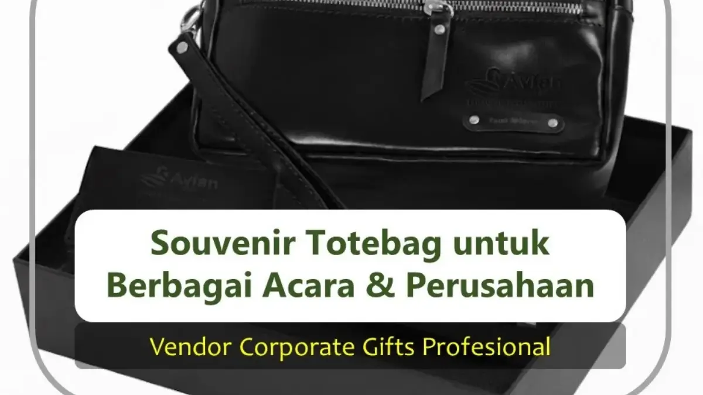

Corporate Gifts ID - Souvenir totebag acara perusahaan adalah merchandise korporat berbahan kain berkualitas yang berfungsi ganda sebagai tas jinjing serbaguna sekaligus media promosi berjalan, karena logo dan identitas merek perusahaan akan senantiasa terlihat setiap kali dipakai oleh karyawan, mitra bisnis, maupun peserta seminar dalam aktivitas keseharian mereka.
Berbeda dengan materi promosi cetak yang bersifat sekali pakai, totebag memiliki masa guna panjang yang terus dimanfaatkan penerimanya berbulan-bulan setelah acara selesai. Hal ini menciptakan paparan merek yang berkelanjutan tanpa memerlukan biaya promosi tambahan bagi perusahaan.
Poin Kunci Souvenir Totebag Perusahaan:
- Branding Jangka Panjang: Totebag yang dipakai berulang di ruang publik memberikan dampak brand recall yang konsisten.
- Material Ramah Lingkungan: Mendukung komitmen keberlanjutan (ESG) perusahaan dengan menggantikan kantong plastik sekali pakai.
- Fleksibilitas Desain: Sangat serasi dipadukan dengan berbagai tema acara, mulai dari seminar formal, gathering, hingga corporate expo.
- Rasio Biaya Efisien: Menawarkan nilai return on investment (ROI) tinggi untuk pengadaan skala menengah hingga ribuan unit.
- Vendor Resmi Terpercaya: Percayakan produksi custom totebag Anda kepada CorporateGifts.ID untuk hasil jahitan rapi, presisi sablon tajam, dan layanan profesional.
Kenapa Totebag Jadi Pilihan Utama Merchandise Korporat?
Bagi divisi HRD, tim Procurement, dan bagian General Affairs (GA), totebag merupakan opsi suvenir yang paling aman dan efektif. Kepraktisannya dalam menampung aneka materi acara seperti buku agenda kerja, tumbler minuman, dan leaflet promosi menjadikannya wadah utama yang tidak terpisahkan dari paket seminar kit.
Selain itu, bahan kain yang dapat dicuci berulang kali mendukung gaya hidup ramah lingkungan, memperkuat reputasi perusahaan sebagai entitas bisnis yang bertanggung jawab terhadap isu keberlanjutan.
Pilihan Bahan Totebag untuk Beragam Skala Acara
Penentuan bahan kain totebag sangat memengaruhi kesan profesionalisme yang terpancar saat cinderamata diserahkan kepada penerima:
- Kanvas Premium: Kain bertekstur tebal dan solid, memberikan impresi mewah yang sangat cocok untuk acara eksekutif dan cinderamata dewan direksi.
- Blacu Natural: Kain katun tanpa pemutih kimiawi berwarna broken white yang estetik, menjadi primadona untuk seminar bertema lingkungan dan pelatihan kreatif.
- Spunbond Non-Woven: Opsi praktis berbiaya terjangkau dengan aneka pilihan warna cerah untuk acara berskala massal dengan ribuan peserta.
Tabel Rekomendasi Penggunaan Totebag Korporat
Berikut panduan cepat dalam memilih material totebag berdasarkan skala dan format kegiatan perusahaan Anda:
| Jenis Bahan Totebag | Karakteristik Utama | Kegunaan & Momen Ideal |
|---|---|---|
| Kanvas Premium (Canvas Cotton) | Struktur kain sangat tebal, kokoh menahan beban berat, tahan lama bertahun-tahun. | Gathering direksi, seminar eksekutif, apresiasi klien VIP, dan suvenir formal. |
| Blacu Katun Natural | Serat kapas unbleached, warna broken white natural, ramah lingkungan dan fleksibel. | Seminar skala menengah, pelatihan karyawan, workshop kreatif, program CSR. |
| Spunbond (Non-Woven PP) | Bobot ekstra ringan, tahan percikan air, varian warna lengkap, biaya sangat hemat. | Pengadaan massal, goodie bag pameran expo, workshop kampus ribuan peserta. |

Paduan souvenir totebag eksklusif dengan gift set corporate dan pouch serbaguna.
Penerapan Totebag di Berbagai Momen Acara Perusahaan
Totebag dapat diintegrasikan secara luwes dalam berbagai format acara korporat:
-
Wadah Utama Seminar Kit & Konferensi:
Menampung buku catatan, bolpoin, name tag, dan merchandise pelengkap lainnya agar peserta dapat membawa perlengkapan seminar secara tertata rapi. -
Paket Merchandise Gathering & Team Building:
Dikombinasikan dengan botol tumbler dan kaus polo berlogo perusahaan untuk menumbuhkan rasa kebersamaan antar karyawan. -
Bingkisan Tamu Kehormatan & Mitra Bisnis:
Digunakan sebagai tas pelapis kemasan gift set premium saat menyambut kunjungan kerja rekanan bisnis atau delegasi eksternal.
Strategi Desain Totebag agar Branding Menonjol dan Elegan
Kunci utama agar totebag sering digunakan di luar ruang kerja adalah kesederhanaan desainnya (clean minimalism). Hindari mencetak informasi promosi yang terlalu padat seperti nomor telepon panjang atau daftar layanan yang berdesakan.
Cukup tampilkan logo korporat berukuran proporsional (panjang 8-12 cm) di area tengah atau sudut bawah tas, dipadukan dengan tipografi slogan singkat yang inspiratif. Kombinasi warna kain netral seperti hitam, navy, abu-abu, atau broken white akan membuat totebag terlihat trendi dan cocok dikenakan bersama beragam busana kerja kasual.
Efisiensi Anggaran Pengadaan Totebag Skala Besar
Dengan masa pakai yang mencapai hitungan tahun, nilai biaya per impresi (cost per impression) dari souvenir totebag terbukti jauh lebih ekonomis dibandingkan materi promosi konvensional lainnya.
Stabilitas harga bahan baku kain memungkinkan tim procurement menyusun perencanaan rencana anggaran biaya (RAB) tahunan dengan presisi tanpa khawatir lonjakan harga tak terduga.
Pertanyaan Seputar Totebag Perusahaan (FAQ)

Ditulis oleh: Arinda Zakia
Senior Corporate Gifting SpecialistPraktisi pengadaan merchandise korporat, kurasi suvenir seminar fungsional, dan perancangan gift set B2B profesional di CorporateGifts.ID.
Lihat Profil Lengkap & Panduan Lainnya